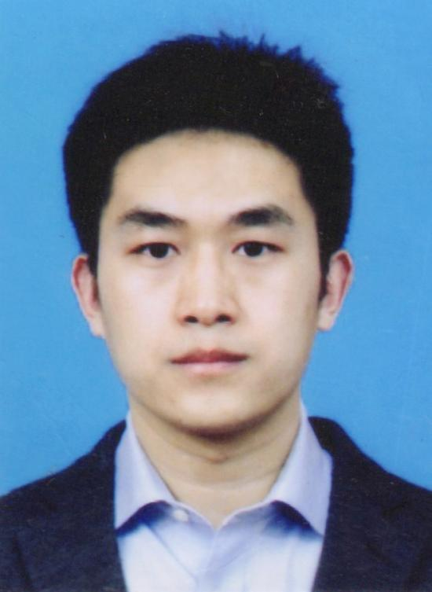

Group Director
张凯, 博士, 副教授/副研究员
工学博士，研究生导师，1991年生。主要从事空间机器人智能控制、卫星姿态和轨道动力学控制、多旋翼飞行器控制、飞行器集群智能决策、人工智能与深度学习等。2012年、2014年、2018年于哈尔滨工业大学航天学院控制科学与工程系获得学士、硕士、博士学位。2018年11月就职于西南交通大学电气工程学院，入选青苗学者计划。2021年12月入职四川大学空天科学与工程学院，主持国家自然科学基金1项、中央高校经费项目2项、企业横向1项，参与国家自然科学基金重大、重点、创新群体项目等多项，发表SCI/EI论文20余篇。
Email: zhangkaihit@gmail.com

宁召柯, 博士, 副教授/副研究员
工学博士，硕士生导师。2018年毕业于哈尔滨工业大学航天学院，主要从事网络安全控制、故障检测与容错控制、无人集群协同控制与决策等方面的教学与科研工作。现担任中国自动化学会青年工作委员会委员。主持国家自然科学基金项目、河南省教育厅高校重点科研项目、河南省科技厅重点研发和推广专项、四川大学引进人才科研启动项目等纵向项目；获河南省教育厅科技成果一等奖；参与国家自然科学基金、国防技术基础等多项国家级/省部级基金项目和企业横向课题；在IEEE Transactions on Fuzzy Systems、Neurocomputing、Information Sciences、Signal Processing等国际知名期刊发表SCI学术论文10余篇。
Email: zhaokening2018@163.com
Postdoc

Zhangli Zhou (周章力)
Ph.D. Students

Student A

Student B

Student C

Student D

Student E